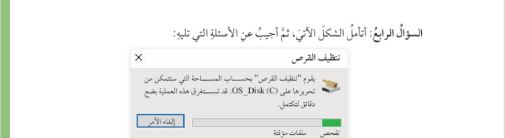

أسئلة الدرس الرابع: إصلاح الأعطال باستخدام أدوات نظام التشغيل
أقيم تعلمي
المعرفة : أوظف في هذا الدرس ما تعلمته من معارف في الإجابة عن الأسئلة
الآتية:
السؤال الأول: أوضح الهدف من إجراء تشخيص الذاكرة لـ Windows
Memory) Windows
.(Diagnostic
نعمل هذه الأداة من الأدواتِ الإدارية على فحص ذاكرة الوصول العشوائي
RAM، وإعطاء تقرير مفصل بجميع المشكلات التي تعاني منها الذاكرة في
نهاية الفحص.
السؤال الثاني: أذكرُ أربعًا من المشكلات التي يمكن حلها عن طريق استكشاف
الأخطاء وإصلاحها .Troubleshoot
مشكلات الاتصال
بالانترنت مشكلات الطباعة
مشکلات لوحة المفاتيح
مشكلات تحديث نظام التشغيل
السؤال الثالث أوضح وظيفة مراقب الأداء (Performance Monitor).
وظيفة هذه الأداة فتح نافذة مراقبة الأداء التي تحتوي على معلومات
استخدام موارد جهاز الحاسوب المعالج، الذاكرة، كرت الشاشة الشبكة ).

أذكرُ خطوات الوصول إلى النافذة السابقة.
.۱ اختيار القرص من قائمة أدوات إدارية لنظام التشغيل يظهر صندوق حوار
ب تحديد محرك الاقراص المراد تنظيفه ثم النقر على زر موافق
ما الإجراء الذي يتم تنفيذه؟
ا. تحليل القرص
ب حساب المساحة التي يمكن تنظيفها منه
المهارات
المهارات: أوظف مهارات التفكير الناقد والتواصل الرقمى والبحث الرقمي في
الإجابة عن الأسئلة الآتية:
السؤال الأول: أبينُ النتائج التي قد تحصلَ إذا تجاهلت إجراء عملية تنظيف
القرص (Disk Cleanup) لجهاز الحاسوب مدة طويلة . مبررًا إجابتي.
السؤال الأول: تجاهل تنظيف القرص
النتائج
.1 تراكم الملفات المؤقتة واستهلاك مساحة التخزين.
.2 تباطؤ أداء النظام.
3. زيادة احتمالية حدوث أخطاء أو تعطل النظام.
التبرير يؤدي تراكم الملفات غير الضرورية إلى استهلاك الموارد والتأثير سلبًا
على أداء الحاسوب
السؤال الثاني أبحث في المواقع الإلكترونية الموثوقة في شبكة الإنترنت عن
أدوات أخرى من أدوات إدارة نظام التشغيل 10 Windows، وأتعرفُ وظيفته.
ادوات إدارة 10 Windows
1 مدير المهام Task Manager) مراقبة العمليات واستهلاك الموارد.
2. عارض الأحداث (Event Viewer عرض سجلات النظام والتطبيقات.
3 مدير الأجهزة Device Manager) إدارة الأجهزة وتحديث التعريفات.
4. تشخيص الذاكرة Windows Memory Diagnostic): فحص RAM
للكشف عن الأخطاء.
5 تكوين النظام :(MSConfig) إدارة برامج بدء التشغيل وخدمات النظام.
6 إدارة الأقراص Disk Management) إنشاء وتنسيق الأقراص والأقسام.